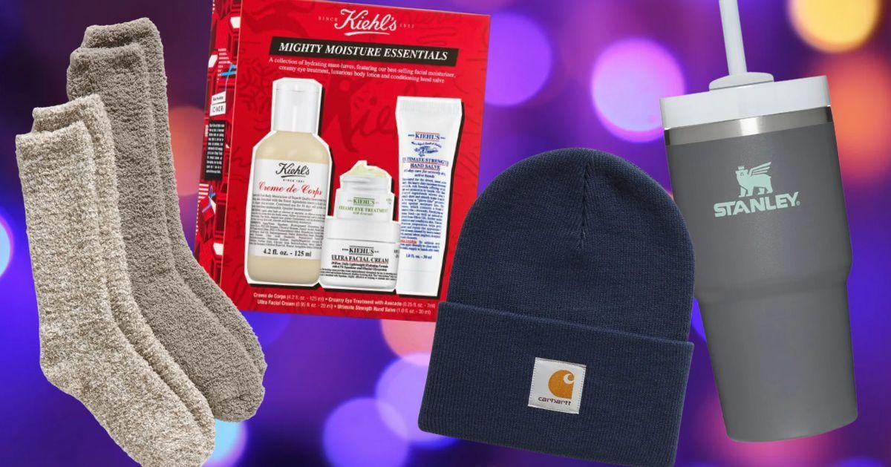

NoneThe goal of holiday shopping is finding awesome items that your loved ones actually want without spending a surplus of money — and it just so happens that you can make this dream a reality with the help of Nordstrom, which is known for its curated selection of brand-name goods across the price point spectrum. For anyone on a budget this holiday season, we rounded up the best gifts to get at Nordstrom this winter, all for under $40. From skin care to pet care to unisex winter accessories anyone would love, we found the best deals on high-quality items that won’t drain your entire bank account. These gifts are great as stocking stuffers or Secret Santa-type items for family or coworkers you don’t know super well — they’re incredibly universal while still being thoughtful. Consider it a list of relatively affordable items people actually want, all from your favorite department store. HuffPost and its publishing partners may receive a commission from some purchases made via links on this page. Every item is independently curated by the HuffPost Shopping team. Prices and availability are subject to change. |
 |